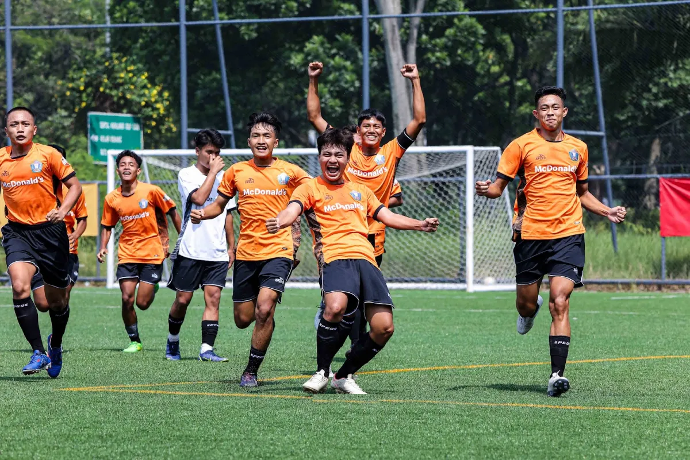
Milestone 01 / 05
2016
Komunitas untuk mencari lawan sparring

Tentang Kami
AYO adalah platform olahraga tempat pemain, komunitas, dan venue bertemu.
Kami ada untuk mengajak lebih banyak orang berolahraga, lebih sering. Lewat AYO, pemain bisa mencari teman main, booking lapangan, ikut kompetisi, dan mencatat skor secara live, sementara venue mengelola bisnisnya dengan AYO Venue Management.
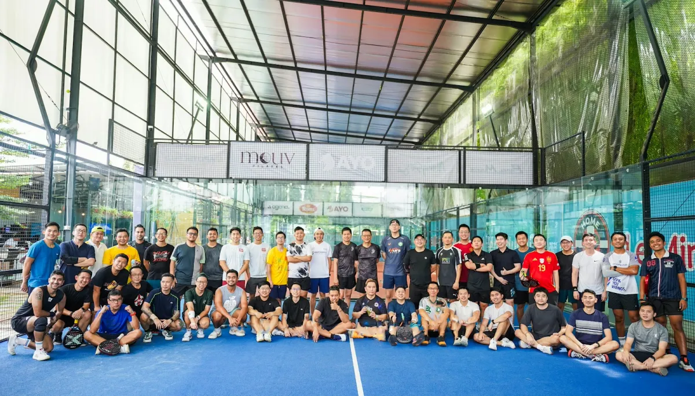
Cerita AYO
Sekarang, dengan AYO orang mencari teman main padel, badminton, tenis, dan cabor lainnya, booking lapangan, ikut kompetisi, dan mencatat skor secara live. Tujuan kami tetap sama sejak hari pertama: membuat olahraga lebih mudah dimulai dan lebih seru untuk terus dimainkan.

Milestone 01 / 05
2016
Mengajak lebih banyak orang berolahraga, lebih sering — karena makin banyak yang bermain, makin sehat komunitasnya, dan pada waktunya, makin kuat atletnya.
Ekosistem olahraga berkelanjutan yang meningkatkan nilai sosial dan ekonomi olahraga akar rumput lewat teknologi.
Ekosistem AYO
Pemain dan venue memakai aplikasi yang berbeda, tapi setiap booking tercatat di tempat yang sama — jadi mencari teman main dan mengisi lapangan terjadi bersamaan.
Untuk pemain & komunitas
Cari teman main, booking lapangan, dan catat skor.
Lihat Open Play →Jadi host sesi, cari lawan, dan kembangkan komunitasmu.
Jadi host di AYO →Untuk venue
Momen
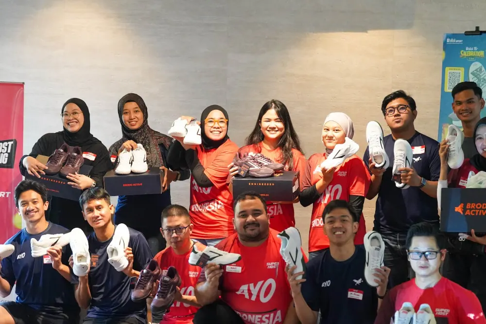
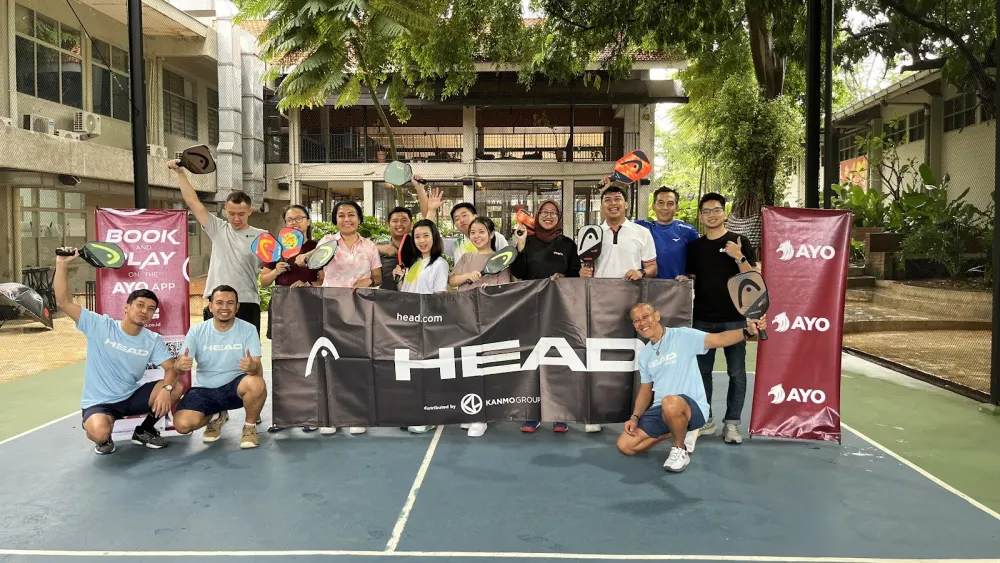

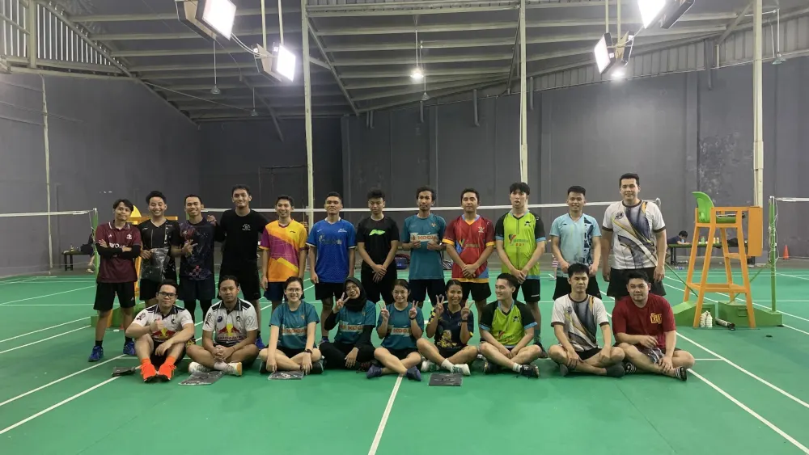

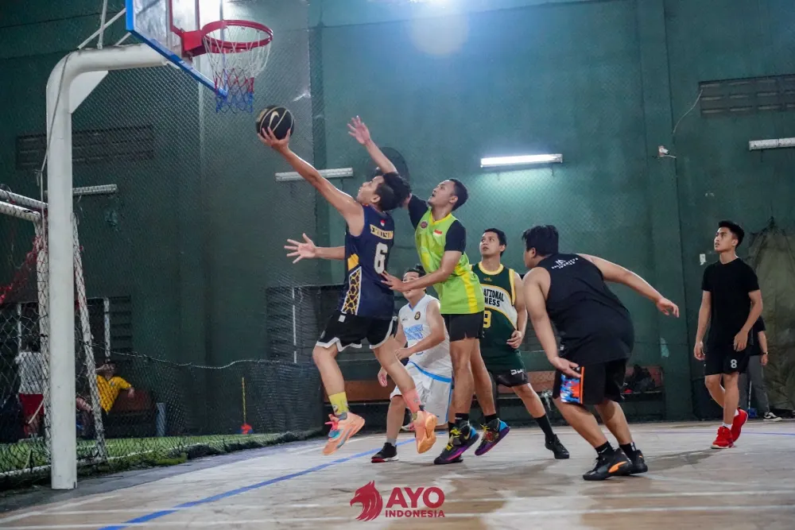
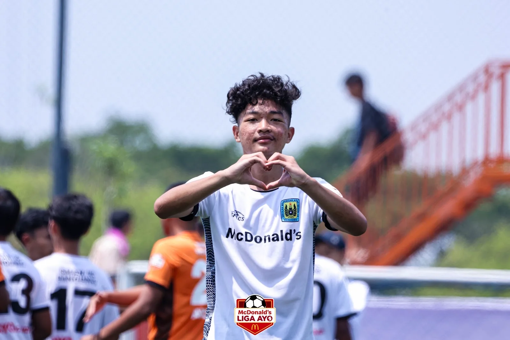

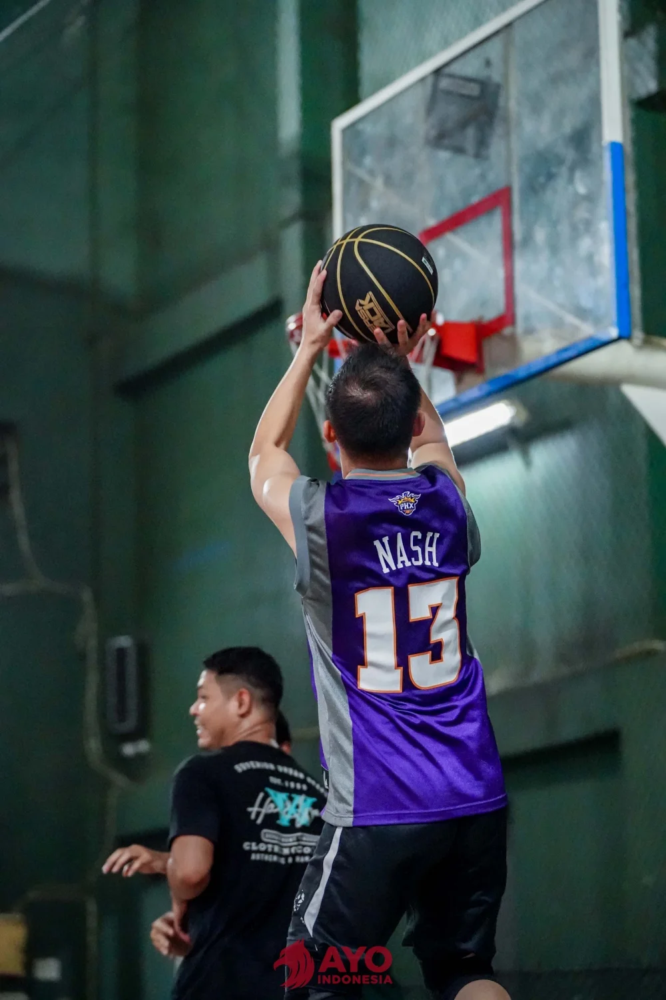
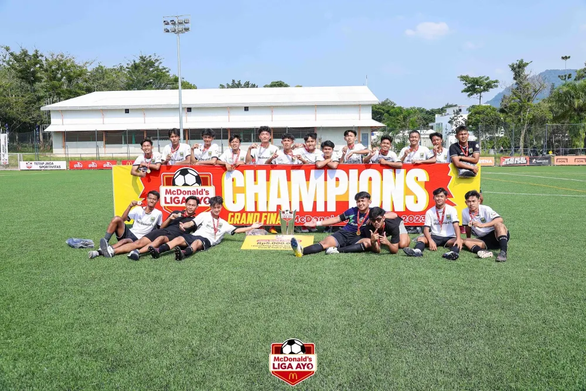

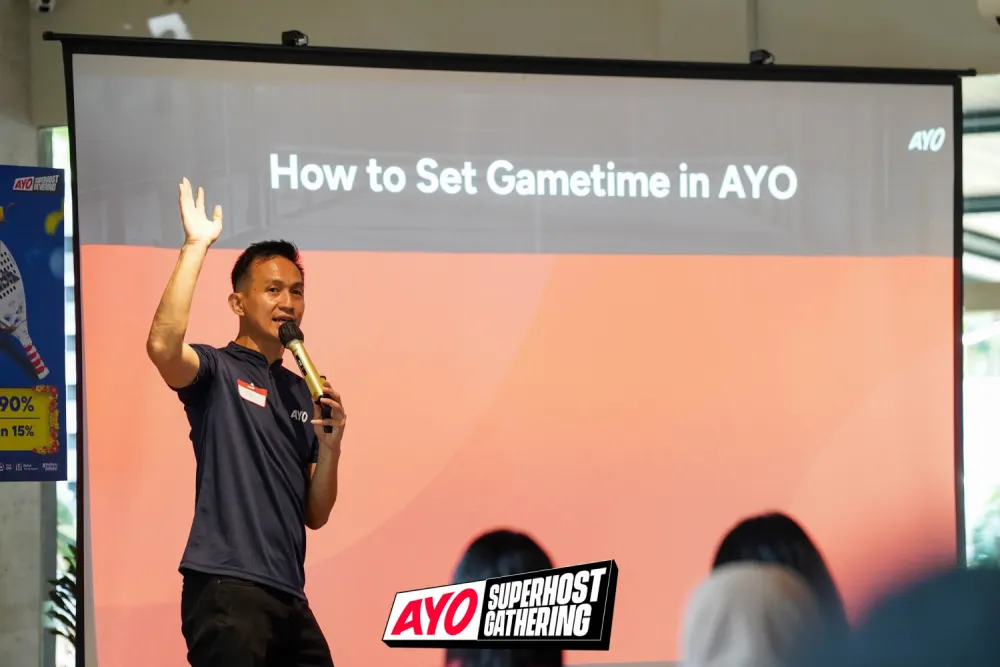
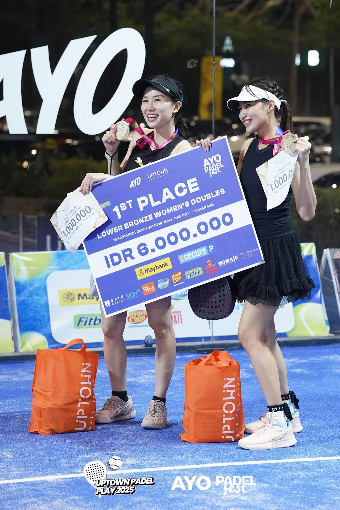


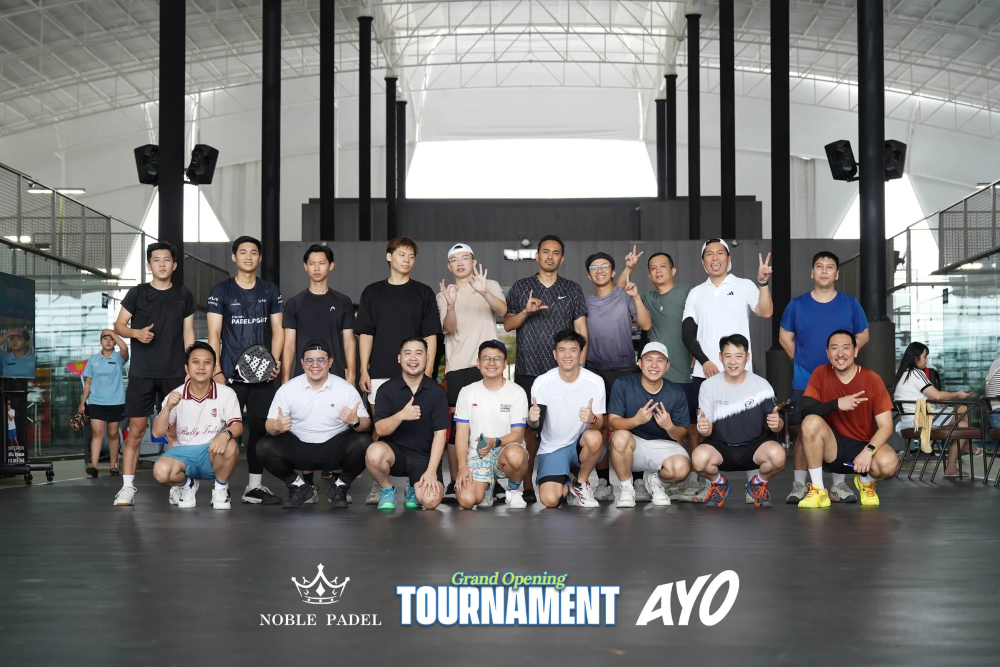
Unduh aplikasi AYO, buat sesi dalam hitungan menit, dan bagikan ke komunitasmu.
Download AYO